Control Circuit 2026 › Tutorial › Chapter 1
This chapter is deliberately small. Control Circuit has a great many tools, and you will not meet most of them today. By the end you will have a saved project with one real symbol on it, part wired, and you will know where the main parts of the screen are.
The start screen lists your recent projects. On a first run the list is empty. Choose New.
The Getting Started Guide link at the top right is always there if you want the overview first.
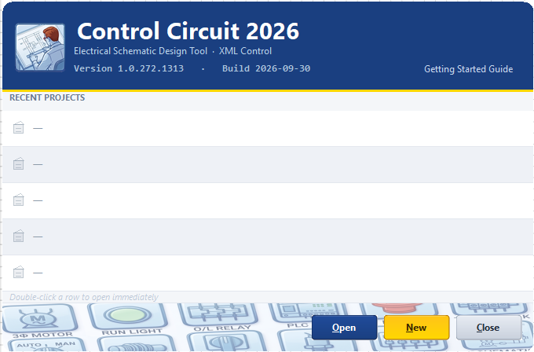
The New Project wizard has four steps, listed down the left: Identity, Location, Standards and Review. Only the Project title is required; you cannot move on without one.
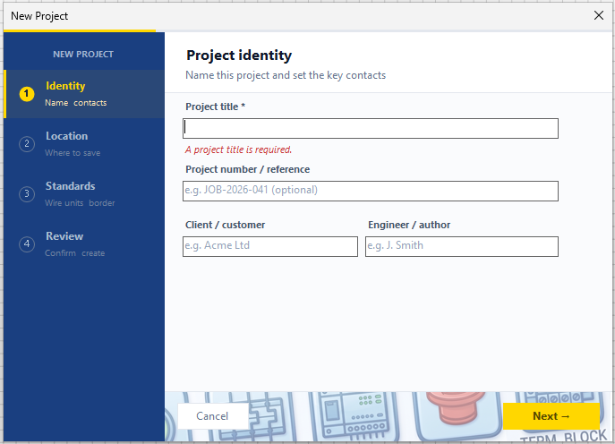
Type a title. Here we use MySimpleCircuit. The project number, client and engineer are optional, and you can fill them in now or at any time later.
Pick the folder that will hold your projects. Control Circuit creates a sub-folder named after the project inside it, so you never need to make one yourself. The full path it will use is shown underneath.
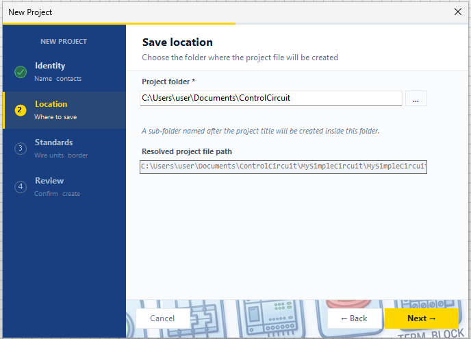
Two choices here.
Wire cross-section units: mm² (IEC, metric) or AWG (North America). This only changes how wire sizes are displayed; mm² is what is stored underneath.
Default border: the drawing sheet size. Pick one and stay with it.
The list shows the common sizes; More… browses the rest. Later on you can build your own borders, including your own branding, with the advanced Border Management tool.
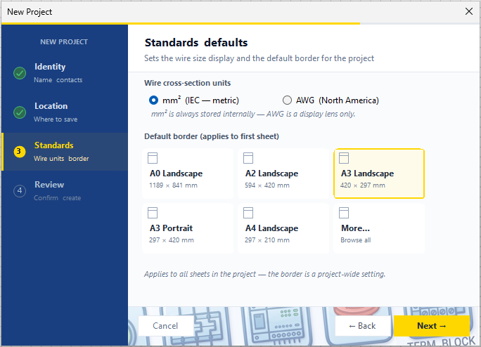
The last page lists everything you chose. If anything looks wrong, use Back. Otherwise choose Create.
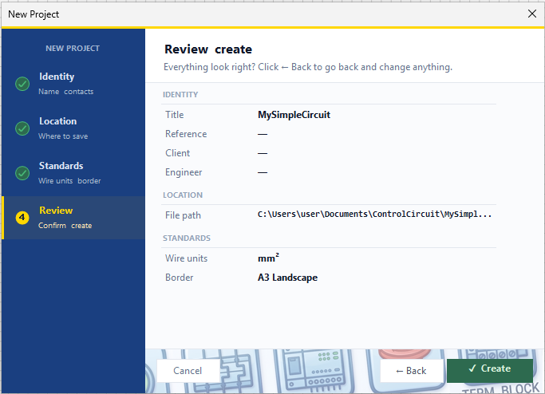
Your project opens with its first sheet, Sheet 1, already drawn with a border and a title block. Three things to notice:
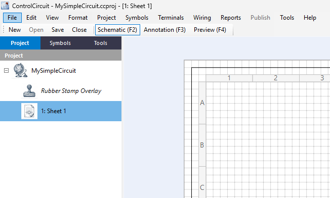
Close the project and you will see it at the top of the recent list on the start screen. Select it and choose Open, or simply double-click it.
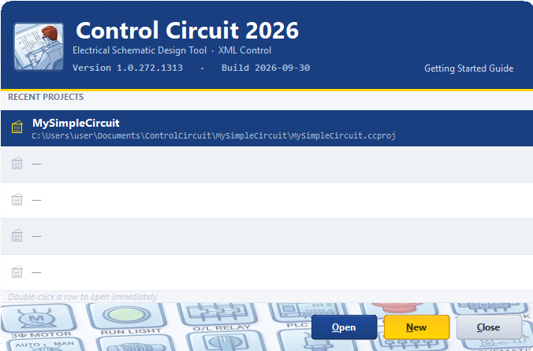
The details you gave the wizard live here, together with a good deal more: revision, status, site and customer details, and comments. Whatever you enter flows into the title block and into reports.
Changes are not final until you choose Save Changes. You will be reminded to save the project itself when you leave the sheet or close it.
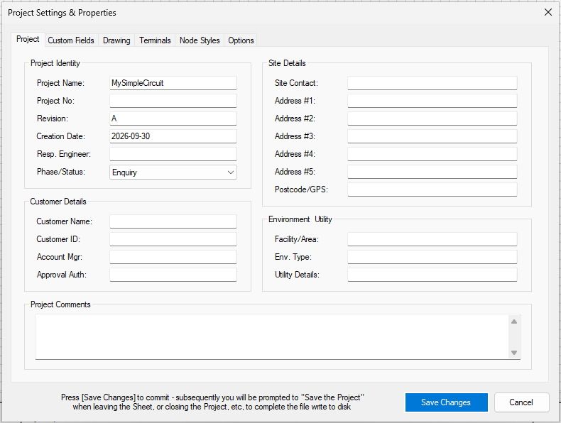
The other tabs — Custom Fields, Drawing, Terminals, Node Styles and Options — are there when you need them. The grey Custom Fields are built in and can only have their values edited; you can add your own, and use them later in annotations.
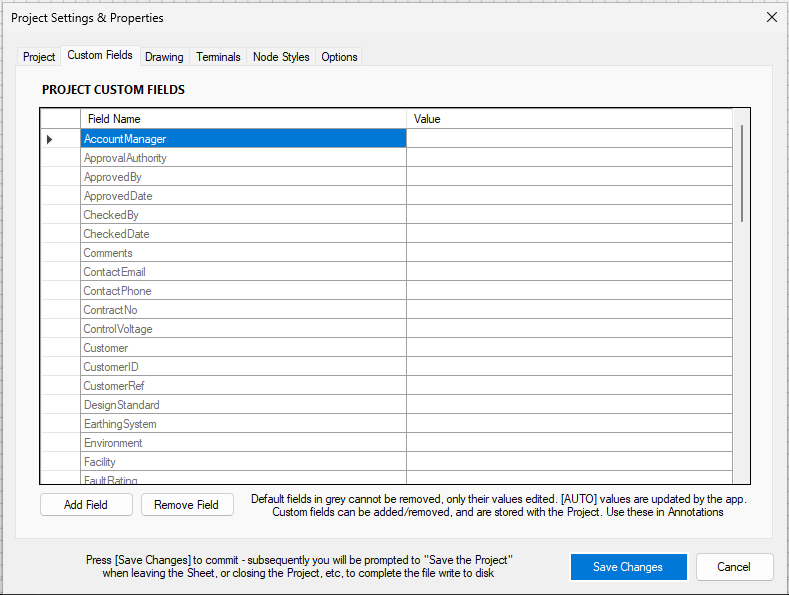
Select the Symbols tab. The symbol library name is shown at the top; click the drop-down arrow to switch library. There are three to start with: IEC_BASIC, NFPA_BASIC and TERMS_BASIC. We use IEC_BASIC.
Symbols are grouped by type: Coils/Contacts, Control, Power, Protection and so on. Expand a group with the +.
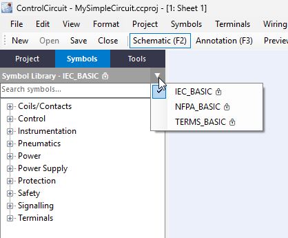
Right-click in the symbol list for a menu. Tick Show Preview so a drawing of the highlighted symbol appears beneath the list. Show Tooltips is worth having on as well.
The same menu has zoom, tree appearance and Expand All / Collapse All.
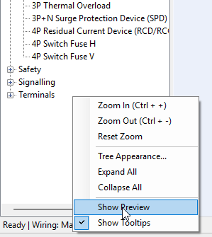
Expand Power and rest the pointer on 3P Switch Fuse V. The tooltip gives its ID, its default tag letter (Q), a description and typical real-world series. The preview shows the symbol.
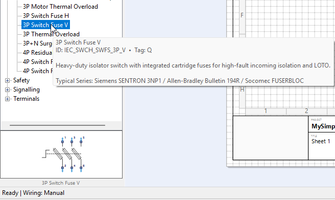
Drag the symbol from the list, or from the preview, onto the sheet and let go. Its six pins are numbered 1 to 6, and it has picked up the tag Q.
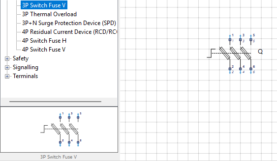
Select the Tools tab. The Wiring group has the Pointer, the wire tools and the Nodes you will use in a moment. The Drawing group below it has lines, shapes, text, notes and so on.
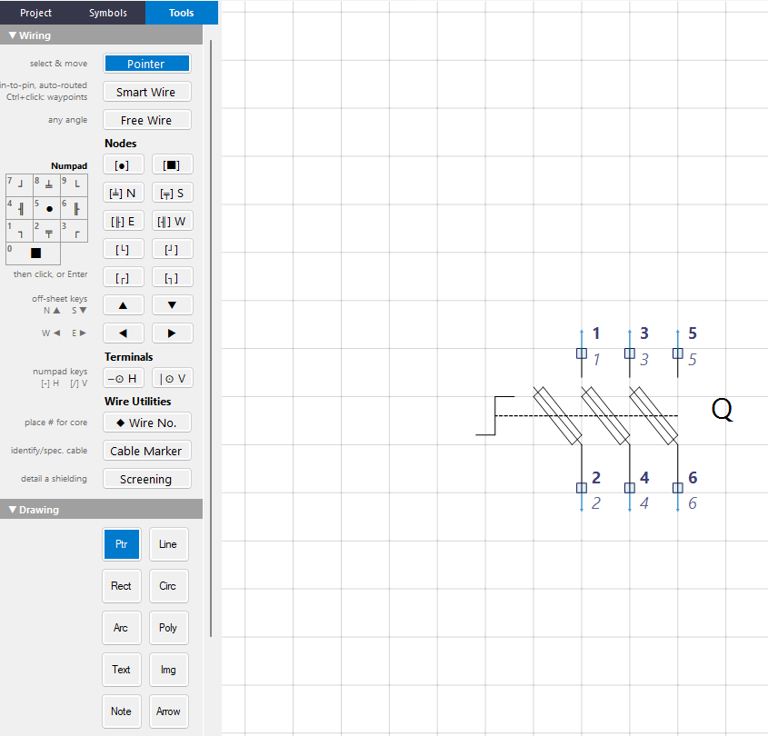
At the bottom of the Tools panel, the One & Done checkbox controls what a tool does after you use it. With it ticked, the tool goes back to the Pointer after a single placement; without it, the tool stays active so you can place several in a row.
The status bar along the bottom of the window also tells you what you just did, for example Placed symbol: 3P Switch Fuse V.
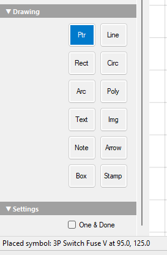
From Nodes, choose the S Junction node and click three times, once above each of the upper pins (1, 3 and 5), roughly in line with them. They show as red T shapes.
Nodes are the building blocks of a circuit: they mark where a wire starts, ends, turns or joins another. A T-shaped Junction can point N, S, E or W, which is why the palette has four of them. The letter is a compass direction: the middle branch of the T, the stem, points that way. An S node has its stem pointing down the sheet.
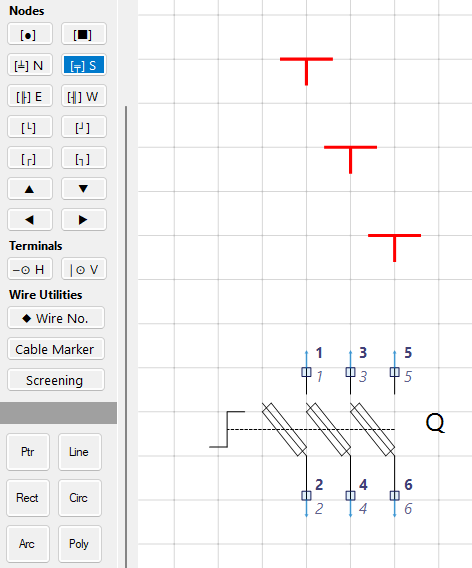
Open the Wiring menu and choose Perform Auto-Wire, or press Alt+W. It draws the wires it can infer between aligned pins and nodes on the current sheet.
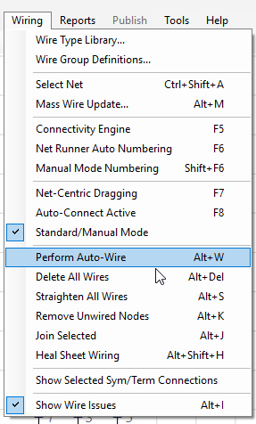
Three wires now run from the pins up to the Junction nodes. You have a saved project, a real symbol, and a semi-wired circuit.
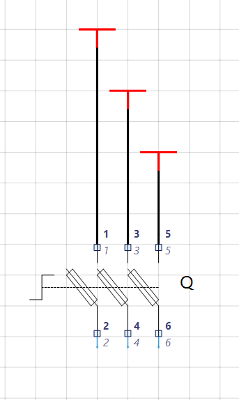
Chapter 2 covers adding more sheets and tagging your symbols. Until then, the reference topics behind this chapter are in the program's help (F1): Project Workflow, Perform Auto-Wire and Working with Wiring.